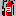
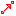

Using the Life History Editor
The use of the the Life History Editor relies on an understanding of
GIPO's object model. The best way to grasp this is to look at the Life History
Tutorial. In this document a brief description of each of the
editors Tool Buttons is given. Under tips we provide an explanation of
how to accomplish standard vector graphics tasks such as inserting way
points into connecting arrows.
Open Save Tool Bar
 Open
Open
The open action replaces the graphic representation of the domain with
a previously saved graphic image. The specification will only be
replaced if the OCL generate action is performed. The new Graphic will
only become the default graphic for this domain if the save domain
action is performed from GIPO's main menu.
Save
The save action will open a "Save As" dialog box to allow the current
graphic representation of the domain to be saved. It will not save the
domain specification.
Save To Library
The save library action saves the entire current graphic as a library
item to be used in other full domain specifications. The action opens a
Save Dialog to allow you to name the library item. The library item
becomes immediately available in the library list to be used in domain
specifications.
Replace
The replace action is used to replace the state name and icon for the
currently selected state. A single state node must be selected in the
main editor panel. The new name must be entered in the "Object Type"
combo box and the new icon selected as the "Object Icon". All state
instances for the selected state will be updated with the new object
types and icons.
Select Icon
The select icon action opens a dialog box to allow for the selection of
an appropriate icon to represent the object type. The available icons
reside in the "icons" sub folder of the domains directory. You may
freely add
new icons to this directory to be used with your own domain objects.

Check Consistency
The check consistency action checks the life history diagram to ensure
that diagram rules have not been broken. These rules will check that
names where appropriate are unique and that actions are properly
connected to states. This test should be followed up once the domain
specification has been created by using GIPO's main "Global Check"
action which carries out more comprehensive consistency checking.
Generate
The generate action uses the graphic domain description to generate the
internal OCL specification of the domain. The domain should have been
checked for consistency prior to specification generation. If a PDDL
domain specification is required then GIPO's main save as PDDL action
must be chosen after this action has been performed.
Close
This action closes the life history editor. Unsaved changes to the
graphics will be lost.
Main Edit Tool Bar - Bottom Bar
Select
The select action defines a mode in which standard graphical editing of
the nodes on the main edit panel can be carried out. The select mode
should be selected prior to other operation such as drag - drop - group
- in line re-naming etc.
Add State
The add state action mode allows for the addition of a state node
within the main edit panel by clicking on that panel. The object type
for the state must have been selected or added to the "Object Type"
text combo box in the top tool bar. The Icon to be associated with this
object type must also have been selected prior to adding the state to
the main edit panel.
Add Action Transition
The add action transition mode allows for the addition of action
transitions within the main edit panel by clicking on that panel. The
object type for the transition must have been selected or added to the
"Object Type" text combo box in the top tool bar.
Connect
The connect action mode allows arrows to be drawn in the main edit
panel to connect state nodes to action nodes. The connection is drawn
by dragging with the left mouse button selected from the source node to
the target node. To enable the drag to begin the mouse must be over the
central port in a node indicated by a small box icon and the mouse
changing shape when over the port. The connection is only made to the
target node when the arrow has been dragged to the target and the
target indicates acceptance by highlighting itself with a light
surrounding box.

Simple Merge
The simple merge mode allows a merge arrow to be drawn as described for
the transition connections above. Simple merge arrows define two types
of merge. If drawn from a state node to an action node the merge define
a "prevail condition". When the merge connects two action nodes it
defines a "conditional transition"
 Necessary Merge
Necessary Merge
The necessary merge mode allows necessary merge arrows to be drawn in a
manner described for connect arrows. The necessary merge mode can only
connect two action nodes.
Inspect
The inspect action is a toggle button. The toggle on action opens up
objects of the type selected in the object type text combo box and
provides detailed descriptions of the state and action nodes. This
description includes descriptions of properties and constraints. Toggle
off hides the detailed descriptions.
Hide Merges
The hide merge toggle button helps unclutter a diagram by turning off,
hiding, all merge arrows. Toggle on makes all merge arrows visible.
Hide Object
The hide object toggle button selectively hides objects of the type
referenced in the Object Type combo box. Toggle on makes the objects of
the type selected in the object type combo box visible.
Package Up
The Package up action groups all selected nodes and provides a dialog
box to allow the package to be named and a suitable package icon to be
selected. Packaging nodes provides a mechanism for information hiding
within the graphical representation of the problem domain.
Open package
The open package action unpacks the currently selected package node
making the top level contents of the package visible.
 Undo
Undo
Undo last edit action. A stack of undoable actions is maintained.
 Redo
Redo
Redo the last undone edit action.
 Copy
Copy
Copy selected nodes.
 Paste
Paste
Paste last copied or cut nodes.
 Cut
Cut
Cut selected nodes.
 Delete
Delete
Delete selected nodes.
Zoom
Zoom to normal size.
 Zoom In
Zoom In
Zoom In one step.
Zoom Out
Zoom Out one step.
Group
Group selected nodes to allow movement etc as a collection.
Ungroup
Ungroup selected group.
To Front
Bring to front layer selected nodes.
To Back
To Back send to back layer selected nodes.
Using Edit Panel Pop-up Menus
When diagram nodes are selected or the mouse is over a diagram node
right clicking with the mouse
brings up a popup menu. The contents of the popup menu are relative to
the type of node that is selected.
All popups support a "View" option that allows the inspection of the
primary attributes of the node to be inspected.
State Node Popup
- Properties
State Nodes support the "Properties" menu item. Selecting this brings
up a dialog box to enter property
details for this kind of object. Added properties apply equally to all
states of the same object sort
To use this dialog you must provide a unique name for this property and
provide a name for the value type of this property. The value type may
be shared between different properties of this and different object sorts.
To delete a property its details must first be selected in the editable
combo boxes and then delete pressed. Renaming properties will involve a
combination of deleting old properties and adding new. Select OK
when the displayed property list is satisfactory.
Transition Node Popup
- Property Change
The Property Change dialog allows the definition of changes to an
objects property
values to be brought about by this transition.
The right drop down combo box will be populated with all the properties
associated with the object sort
for which this is a transition. A property change allows for the
selection of a property name and the entry of
a constraint name which will form a predicate restricting the possible
changes that the property can make.
Instances of this constraint can be defined in the "Atomic Invariants
Editor". If "none" is chosen as the constraint then the values of the
named property will be allowed to change in an unconstrained way.
- Number Constraint
Number constraints allows for the specification of the number of
objects of the sort associated with this transition must
make the transition at the same time. The default is one and this need
not be set for most ordinary transitions.
The number required (an integer greater than 1) is entered into the
right edit box. The left edit box allows for the entry of a name to
define a relationship that the participating objects must be in for
them to make this transition together. If "none" is selected then any
group of the correct cardinality can make the transition together. When
a number constraint is added to a transition node the node will be
given a red border to indicate the presence of "number constraints". - Make
Disjunction
This menu Item is only displayed when a transition node has multiple
merge arrows connecting to the node as target. In this case if "Make
Disjunction" is selected one version of the operator corresponding to
the transition will be created for each merge connection. The default
is that when multiple merge arrows are connected to a transition node
they form a conjunction of constraints on the transition. When a
transition is made a disjunction the node will be given a red gradient
background to make its status immediately clear.
Merge Connection Popup
- Start Association
Starting an association means that when an object of the target object
sort makes the identified transition then the object at the source of
the merge that plays either the role as a "prevail" or "necessary"
transition will be associated with the target object. That association
will be maintained until broken, as indicated below. The creation of
the association is shown visually by the presence of a "+" on the
merger connection
- End Association
An association created as above will be broken when the target object
makes the identified transition. The object at the source of the merge
connection must be of the same sort as the object used to form the
transition. The end of the association is shown visually by the
presence of a "-" on the merge connection.
- Remove Association
Removes either a Start or End Association from a merge connection.
- Coordination Constraint
A coordination constraint defines a relationship that the objects
connected by a merge constraint must have in addition to the
constraints already implicit in the merge i.e. forming
"prevail" or "necessary" roles.
The dialog box allows for the naming of the relationship and specifying
for both the source and target/destination objects whether or not the
relationship holds between objects "isaObject" or between objects
possessing specified
properties, in which case the property names are chosen from the drop
down boxes.
Tips
- Using View Modes Using the modes that toggle on hiding of
sections of the diagram and make the diagram less cluttered but
do not open up space within the diagram. The hidden nodes still occupy
the same physical space and position in the diagram. That space should
not be used to place new diagram nodes.
- Renaming Nodes Use select mode . Double click on the node
and edit in place. Note you cannot do this if the inspect mode is
toggled on .
- Adding Way Points Use select mode .
Position mouse pointer over arrow line at toe position you want a way
point. Hold the shift key down and click on with the right mouse
button. If you hold the button down you can now draw the way point to
the position you desire. If you release the button you can move the
visible way point by placing the curser over it and the dragging while
holding the left mouse button down
- Removing Way Points Use select mode. If
way point not visible with selection box select the line by left
clicking on the line. All Way points on that line will now be visible.
Position mouse over way point to be removed. Cursor turns to cross.
Hold Shift down and right click with mouse.
 back
to the user manual front page
back
to the user manual front page